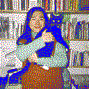

Noam Youngrak Son is a theorist of material culture, science-fiction writer, and cultural worker based in Brussels. Trained in design, they now develop speculative narratives and theoretical frameworks concerned with technics, ecology, gender, political economy, and the conditions of cultural production. Their work develops across multiple mediations—including essays, speculative fiction, diagrams, lectures, web-based narrative systems, and organizational forms—according to the material conditions of each inquiry. Son critically examines the politics of representation and asks how human and nonhuman bodies, infrastructures, and systems of value are organized through material and representational regimes. For Son, science fiction is a materialist method for approaching the not-yet: forms of life already latent in the present but not yet available to existing regimes of representation. Positioned “in but not of” contemporary cultural institutions, they approach them as sites through which broader social and ecological contradictions become legible. They publish the Archive of Patchy Studies as an experiment in how creative labor—namely artmaking and writing—can sustain its value without institutional mediation. As a cultural worker, they co-organize the Queer Collective Workers’ Union in response to the enclosure of queer commons within and around cultural collectives.
Subscribe to the newsletter

Loading summary data...
Loading infrastructure data...
Loading websites...